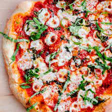
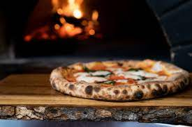
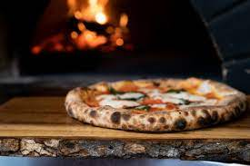

Margherita Pizza
Origin: Italian Source: Own recipe Category: Main Dish Do you want easy, quick way to enjoy pizza without having to do all of the work? Try to make our pizza, which takes 10 minutes to assemble and 20 minutes to bake in the oven. Our recipe feeds 4 people.
Recipe Ingredients:
- 1 lb pizza dough
- 4 tomatoes
- 1 cup of mozarella
- any amount of fresh bazil
- 1 tablespoons of salt
- 1 tablespoon of olive oil and any seasonings of your choice
- 1 cup of water
Recipe Steps:
- Preheat oven to 400 degrees
- Mix the pizza dough with salt and water until it becomes firm
- place the pizza dough on a pan and crush the tomatoes into a paste
- apply the tomatoes across the pizza dough
- sprinkle the mozzarella and bazil over the pizza
- finally add seasonings and put in the oven
- Bake for 15-20 minutes
- Eat!
Additional Food Images:
 

Scrambled Eggs
Origin: American Source: Own Recipe Category: Main Dish
This is an easy way to make spicy and tasty scrambeled eggs for breakfast, lunch, or dinner and only takes 15 minutes to make.
Recipe Ingredients:
- 4 eggs
- red chilli flakes
- basil
- green chillies
- vegetable oil
- pepper
- salt
- grated mozarella cheese
Recipe Steps:
- heat oil on a pan at medium heat
- cut up 2 green chillies and basil into small pieces.
- break 4 eggs and put in pan
- sstir the eggs till they become solid
- add in red chilli flakes, green chillies, basil, pepper and salt
- stir for 5-8 minutes
- add mozarella
- stir for another 3 minutes
- serve and eat!
Additional Food Images:
White Sauce Pasta
Origin: France/Italy Source: Own Recipe Category: Main Dish
White sauce pasta is a creamy and savory dish that can be enjoyed for either lunch or dinner. Inspired by a fusion of Italian and French cuisine, the rough texture of rigatoni pasta allows for heavier sauces to be picked up, including the flavor profile of this delicious sauce. This union of two cultures allows for the perfect balance between each component of the recipe, creating a fulfilling entree that every individual can enjoy.
Recipe Ingredients
- Olive Oil
- Butter
- Diced Onion
- Diced Garlic
- Diced Bell Pepper
- Rigatoni Pasta
- Heavy Whipping Cream
- Milk
- Shredded Parmesan Cheese
- Salt
- Ground Pepper
- Garlic Powder
- Onion Powder
- Paprika
- Oregano Leaves
- Bay Leaves
- Parsley Leaves
Recipe Steps
- Bring a pot of water to a boil. Once the water begins to bubble, add in the pasta, salt, and a drizzle of oil.
- While the pasta is cooking, heat oil and butter in a saucepan.
- Once the butter has melted, add in diced onions and garlic. Sauté them until golden brown or aromatic.
- Stir in the bell pepper until slightly softened.
- Pour in the heavy cream, milk, salt, ground pepper, garlic powder, onion powder, paprika, oregano leaves, and bay leaves into the saucepan. Mix well and allow for the mixture to simmer. Adjust the seasoning to your taste.
- Add the shredded parmesan cheese and stir until melted.
- Throw in pasta and mix until the pasta is coated with the creamy sauce.
- Garnish with parsley leaves, and enjoy.
Additional Food Images